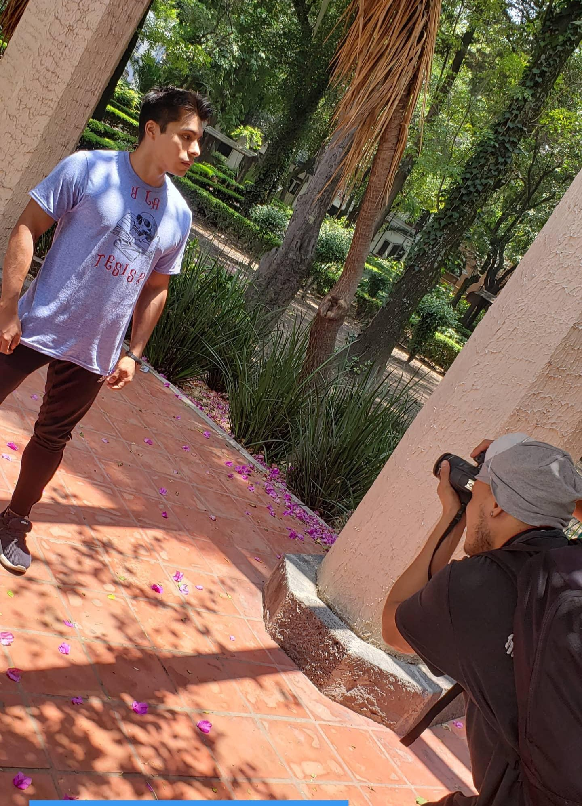

Somos una compañía nacida de la amistad de dos universitarios, que en busca de dar a otros como nosotros prendas de ropa que fueran de buena calidad, a un precio justo y que fueran otra opción para demostrar quienes son y que es lo que les define, en cualquier lugar en donde se encuentren. Nuestra misión es darte en cada una de nuestras prendas la calidad, estilo y durabilidad que estás buscando.
Todos nuestros productos son fabricados en nuestro taller en la ciudad de México con el mayor cuidado y utilizando insumos 100% mexicanos.

Tenemos una confianza completa en cada uno de los elementos que salen de nuestro taller que te damos una garantía de satisfacción del 100%°